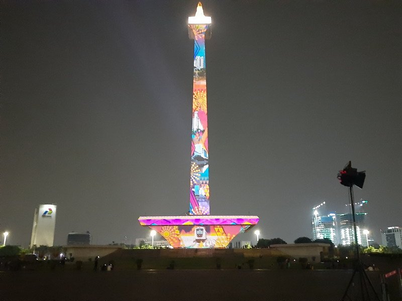

MONAS
Monas ( Monumen Nasional ) atau yang populer disingkat dengan Monas atau Tugu Monas adalah monumen peringatan setinggi 132 meter (433 kaki) yang didirikan untuk mengenang perlawanan dan perjuangan rakyat Indonesia untuk merebut kemerdekaan dari pemerintahan kolonial Hindia Belanda. Pembangunan monumen ini dimulai pada tanggal 17 Agustus 1961 di bawah perintah presiden Soekarno dan dibuka untuk umum pada tanggal 12 Juli 1975. Tugu ini dimahkotai lidah api yang dilapisi lembaran emas yang melambangkan semangat perjuangan yang menyala-nyala dari rakyat Indonesia. Monumen Nasional terletak tepat di tengah Lapangan Medan Merdeka, Jakarta Pusat.
Pasti sudah tidak asing ya dengan bangunan ikonik satu ini? Yes betul, Monas! Monas atau Monumen Nasional ini menjadi salah satu bangunan yang mayoritas masyarakat di Indonesia sudah mengenalnya atau bahkan sudah pernah mengunjunginya. Memang tidak pernah sepi, apalagi ketika hari libur sekolah dan saat weekend. Areanya yang sangat luas membuat masyarakat bisa melakukan banyak hal, bahkan tak sedikit para pelaku pekerja wisata yang ada di sekitar Monas yang menawarkan jasanya seperti berfoto atau oleh-oleh khas Monas.
Nah dibalik itu semua, ternyata ada fakta-fakta menarik yang tersimpan dibalik tugu Monas ini, Yang pertama adalah mengenai rancangan bangunan yang memiliki arti. Tugu Monas dibangun tidak hanya sekedar bangunan tinggi yang menjadi pusat perhatian, namun sebenarnya tugu Monas ini melambangkan Lingga dan Yoni. Lingga adalah tiang tanda kelaki-lakian yang memiliki arti kesuburan dan Yoni adalah landasan obelisik yang memiliki arti perempuan yang feminism. Ide ini berasal dari Soekarno sendiri, dan Monas juga sering disandingkan dengan lambing alu dan lesung untuk menumbuk padi. Ukuran Monas melambangkan tanggal Kemerdekaan RI, yaitu tinggi pelataran cawan dari dasar 17 meter. Sedangkan rentang tinggi antara ruang museum sejarah ke dasar cawan adalah 8 meter. Luas pelataran yang berbentuk bujur sangkar berukuran 45x45 meter.
Yang kedua adalah, tugu Monas ini tidak sekedar tugu biasa. Fasilitas di area Monas kian ditingkatkan. Seperti yang disinggung di atas sebelumnya, area Monas kini menambah fasilitas hiburan seperti lapangan olah raga, air mancur menari, pujasera. Pengaturan keamanan dan pembersihan tugu pun rutin dilakukan. Jadilah Monas yang bukan hanya sekedar tugu, melainkan destinasi wisata andalan khususnya untuk warga Jakarta untuk berlibur dan menikmati ruang terbuka hijau di tengah pusat Jakarta.
Terakhir yang paling menarik adalah puncak tugu Monas. Ya Banyak orang yang menyangka bahwa pucuk yang ada di atas Monas adalah emas asli, ternyata tidak. Mengutip dari buku Tugu Nasional Laporan Pembangunan 1997, yang diterbitkan oleh Pelaksana pembina Tugu Nasional, Jumat (31/1/2020). Bagian atas yang terletak di puncak monas dinamakan Lidah api yang terletak di atas atap pelataran puncak, berbentuk kerucut setinggi 14 meter ini, seluruhnya terbuat dari perunggu seberat 14,5 ton dan terdiri dari 77 bagian yang disatukan. Seluruh permukaan luarnya dilapis emas murni (Gold Foiled).
Jadi Bagian yang ada di puncak monas bukan emas asli melainkan perunggu yang dilapisi oleh emas murni seberat 35kg ya Teman Lakuemas! Dalam rongga lidah api ini terdapat ruang mesin elevator yang juga dilindungi dengan sungkup untuk mencegah percikan air hujan yang datangnya dari celah-celah lidah api. Ketinggian sampai titik puncak lidah api adalah 132 meter dari halaman Tugu, sedangkan tinggi dari pelataran puncak ketitik puncak lidah api adalah 17 meter. Untuk menjaga keamanan terhadap gangguan petir, maka pada titik puncak lidah api ditempatkan tiang penangkal petir.
Kelebihan
menuju ke Monas cukup mudah, karena berada di pusat Jakarta anda bisa menggunakan kendaraan pribadi, menggunakan Bus Trans Jakarta, maupun menggunakan kereta api atau KRL Jabodetabek dan turun di Stasiun Gambir.
Kekurangan
Dipenuhi Oleh pengunjung dan mengatri panjang dalam pintu masuk Monas.